|
|
| hard corals text index | photo index |
| Phylum Cnidaria > Class Anthozoa > Subclass Zoantharia/Hexacorallia > Order Scleractinia > Family Fungiidae |
| Mole
mushroom coral Polyphyllia talpina Family Fungiidae updated Nov 2019 Where seen? This rather velvety looking mushroom coral is sometimes seen on some of our Southern shores. The coral is free-living (it is not attached to the surface) and large ones may be seen on coral rubble and among living corals. Features: Skeleton longer than broad (15-25cm long) usually with rounded ends. Sometimes also oval and other irregular shapes. It has a central furrow but this is usually not distinct in large old animals. The upper side has tiny short lines that form petal-shaped, radial patterns, instead of parallel lines as in other mushroom corals. There are mouths in the central furrow as well as scattered elsewhere on the body. Tentacles are short, cylindrical to conical and white-tipped. When the tentacles are extended, they hide the skeleton and give the animal a furry look. 'Talpina' means 'mole' in Latin possibly refering to this velvety texture which resembles the fur of a mole. Underside concave. Colours seen include brown, grey, cream to blue, purple and green. Veron considers it to be colonial rather than a solitary polyp. It has many mouths all over the upper surface. Sometimes confused with other long mushroom corals. Here's more on how to tell apart elongated mushroom hard corals. |
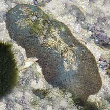 Sisters Island, Jan 06 |
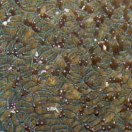 Petal-like, radial patterns. |
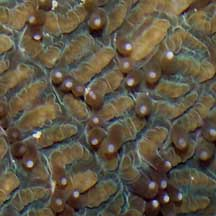 |
|
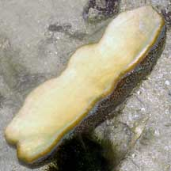 Underside |
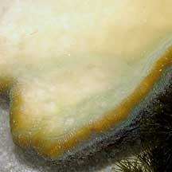 |
|
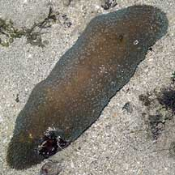 Sentosa, Jul 05 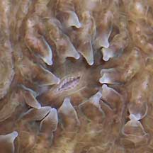 |
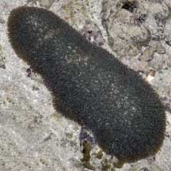 Sentosa, Jun 06 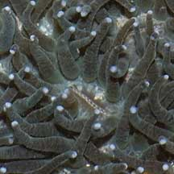 |
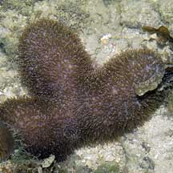 Pulau Hantu, Aug 03 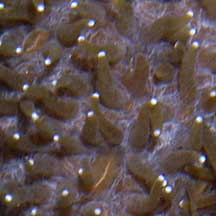 |
*Species are difficult to positively identify without close examination.
On this website, they are grouped by external features for convenience of display.
| Mole mushroom corals on Singapore shores |
On wildsingapore
flickr
|
| Other sightings on Singapore shores |
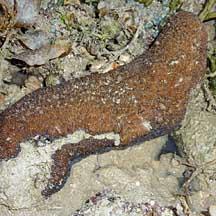 Terumbu Berkas Besar, Jan 10 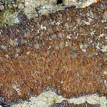 Photo shared by Loh Kok Sheng on his flickr. |
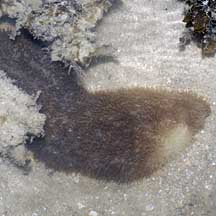 Pulau Senang, Jun 10 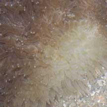 Bleaching. |
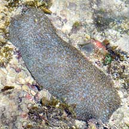 Pulau Salu, Apr 21 Photo shared by Loh Kok Sheng on facebook. |
|
Links
References
|